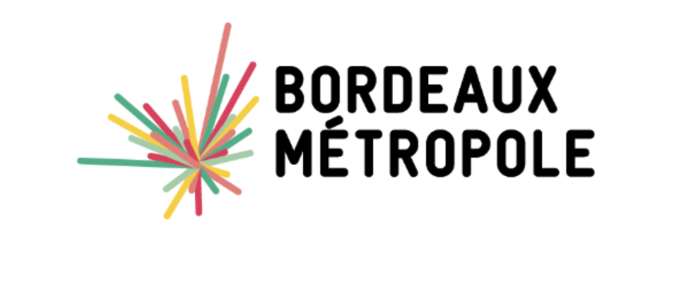
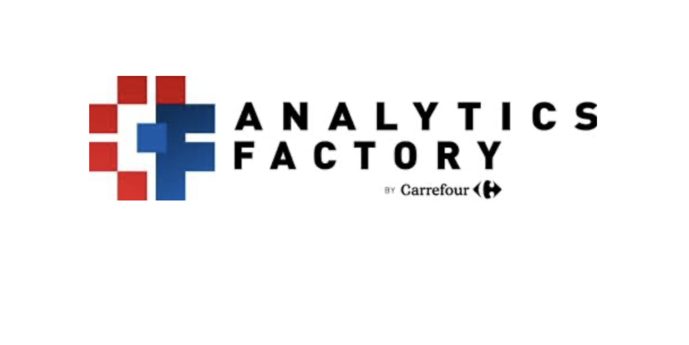
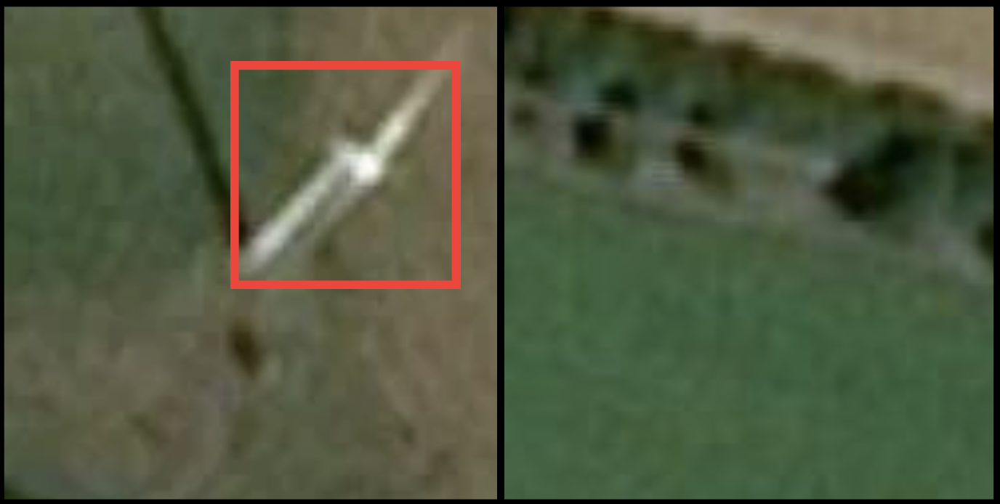
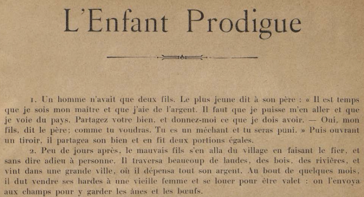
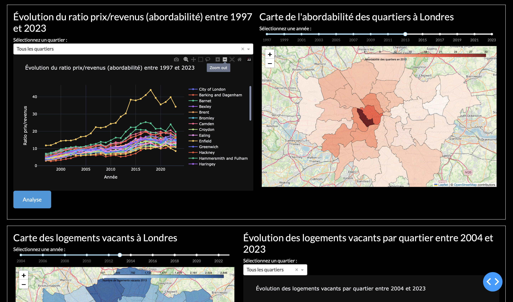

Transformer les données en décisions et en valeur concrète
Passionnée par l’analyse de données et la modélisation, j’aime faire parler les données, les structurer et les transformer en solutions concrètes.
Au fil de mon parcours, j’ai développé une approche rigoureuse de la data science : comprendre le problème, explorer les données en profondeur, concevoir des modèles adaptés et en évaluer la performance avec exigence.
Aujourd’hui, je souhaite contribuer à des projets stimulants où la data devient un véritable levier stratégique au service de la décision et de l’innovation.

Datathon Métrodata - 48h pour transformer des données en indicateurs clés des transitions économiques...

Défi IA organisé en partenariat entre l’Université de Bordeaux et l’Analytics Factory de Carrefour France...

L'objectif était de concevoir et de comparer plusieurs modèles de classification d'images à partir d'images satellite afin de détecter automatiquement la présence d'éoliennes...

Étude statistique de l'enquête linguistique menée par Édouard Bourciez à la fin du XIXᵉ siècle...

Exploitation des données ouvertes de la ville de Londres afin d'analyser et de visualiser les dynamiques urbaines dans les domaines du logement, des transports et de la santé...
Exploration et comparaison de méthodes ML pour l'analyse de produits pétroliers à partir de données spectrales.
Semestre d'échange en Belgique réalisé en troisième année.
Parcours Licence + Master renforcé sur 5 ans (équivalent à 6 années d’études, 360 ECTS), reconnu par le Réseau Figure (label CMI). Formation exigeante axée sur les statistiques, l’informatique et la data science ( programme du CMI ISI ).
Vous avez un projet passionnant ? Discutons-en !